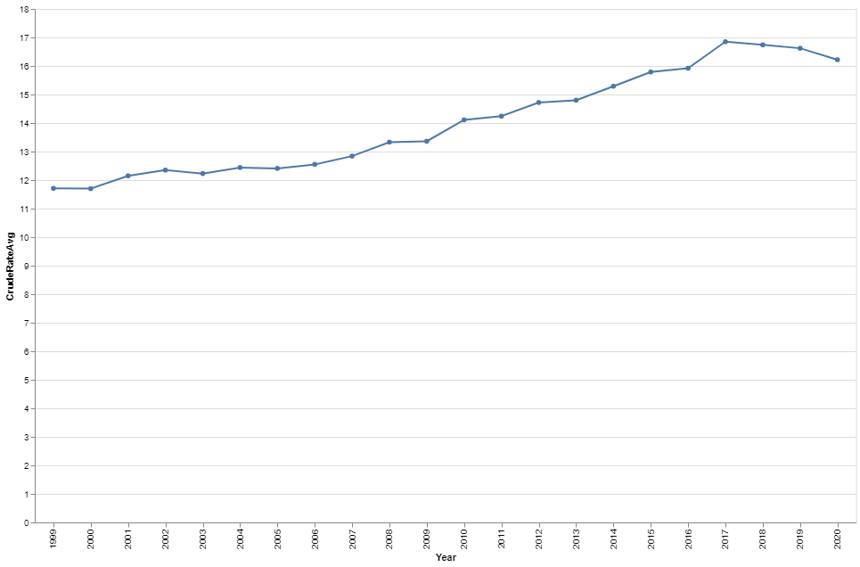

For the past 15 years, Bobby Carter has visited all of Lubbock's high schools at the beginning of each school year to tell teachers and counselors about the crisis intervention services offered by StarCare Lubbock, the state-designated local authority for mental health services for the five-county area.
“We also have a strong collaboration with the police department, and they know to contact us any time they encounter a college-aged student off-campus who is experiencing a crisis,” said Carter, the director of StarCare’s diversion programs, as he sat in his truck, sporting a thick beard and a hat.
But due to the heavy stigma associated with mental health issues and the high cost of treatment, officials say many people in Lubbock are hesitant to seek help for their children's mental health.
A 2019 report on mental health care in the Lubbock area by the Meadows Mental Health Policy Institute estimated that approximately 20,000 children and youth in Lubbock County had mental health or substance disorders and that 4,000 of them had experienced serious emotional disturbances. Among 12- to 17-year-olds, the report estimated nine new cases each year of first episode psychosis, a mental state characterized by a break with reality. For 18- to 34-year-olds, it estimated 40 new cases a year.
“There is no first episode psychosis (FEP) program to identify and treat people experiencing a psychotic disorder at the earliest possible point – an important gap, especially in a community with a large college-age population,” the report noted.
But that soon changed. StarCare Specialty Health, the sole local mental health authority in Lubbock, partnered with Texas Tech University in March 2020 to launch a first episode of psychosis program, a treatment regimen of psychotherapy, medication and family education and support that is regarded as highly effective at preventing youth suicide. It is one of 29 such programs around the state designed to slow, stop and potentially reverse the effects of psychosis.
The StarCare FEP program serves patients who have experienced psychotic symptoms for the first time within the past two years. "I believe we have also served a few individuals with major depressive disorder and psychotic features," said Carter.
StarCare’s FEP program is financed by a grant from the Texas Health and Human Services Commission. The program is capable of catering to a maximum of 20 people ages 15 and 30. Additionally, every participant in the program is committed to a three-year term of service.
But currently the Lubbock FEP program only has six young adults in their early twenties enrolled, despite StarCare's extensive community outreach efforts, such as providing services and training for local school districts and participating in radio or TV interviews.
"In West Texas where there is a conservative mindset," said Carter, "There is a significant portion of the population with a 'pull yourself up by your bootstraps' mentality, so I think that's where a lot of the resistance comes from."
Negative stigma has led many people to avoid seeking help from hospitals or local mental health authorities like StarCare. The FEP program has implemented a proactive approach. Case managers regularly visit patients in their homes on a weekly basis, which greatly addresses the issue of patients not wanting to go to the hospital.
"Much of our work is driven by the needs of the local community," said Marle Antu, director of behavioral health services for StarCare and a licensed clinician, "Different communities have unique needs, and we strive to provide tailored services accordingly."
Dr. Wail Amor, an assistant professor at Texas Tech Physicians, is involved in the FEP project. According to Amor, the psychiatric care they provide involves evaluating new and follow-up patients, prescribing or refilling medications, and referring patients for psychotherapy, substance use, and medical services.
The FEP team is led by a professional counselor and includes two case managers who provide direct community outreach to patients. The program also has a peer provider who can relate to patients through lived experiences and works closely with the team. Carter noted that the peer provider can connect with patients on a deeper level than a case manager might be able to.
People can currently participate in the FEP program at no cost, Antu said, regardless of whether they have medical insurance or not, thanks to state funding.
“I think we’ve seen a tremendous amount of success with our FEP program,” said Carter, “Main goal for this program is we do work with college age people who are not necessarily enrolled in school. We want to help them go back to school or to help them find a job where they can live.”
While there is currently no specific data supporting the effectiveness of the FEP program in the Lubbock area, Amor recommends it for young adults struggling with mental illness and psychotic symptoms.
"Patients can expect exceptional support through the FEP program, with the team lead overseeing the delivery of personalized services that may include medication delivery, home visits, and telepsychiatry appointments," Amor said.